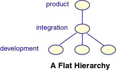
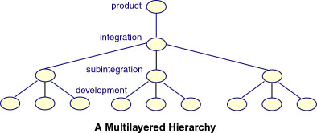

Related Topics:Related Topics:
Related Topics:Related Topics:| Workspaces Defined | Parent and Child Workspaces |
Before you start a TeamWare project, you should consider to how you will set up your workspaces. Traditionally, project managers set up workspaces to include layers of integration workspaces between the developers and the master workspace. Changes can be tested in the integration workspace before they are put back to the "master" or product workspace.

You choose how many layers you have between your top workspace and the team members' personal workspaces. You can have a flat hierarchy, that is, one in which many team members put back files to a single integration workspace, or you can have a multilayered workspace with "subintegration tiers" between the top workspace and the team members' workspaces.

The advantage of a flat workspace hierarchy is that all team members have immediate access to one another's changes. The disadvantage is that team members spend more time doing bringovers, builds, and tests to keep their source base up-to-date. The advantage of a multilayered workspace is that team members spend less time on putbacks and resolving conflicts. The disadvantage is that putbacks from subintegration workspaces to the integration or product workspace are more complicated.
If you have a large project and can divide your developers into smaller groups working on related portions of code, setting up a multilayered hierarchy is more efficent because it allows you to do larger integrations less frequently.